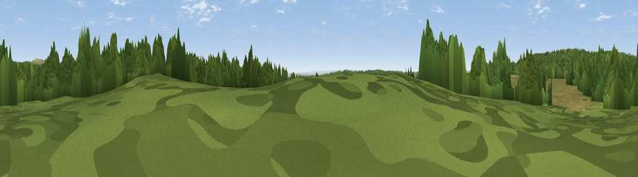

Viewpoint near Elsdon
#25886 in England · top 65% of its area beats it · near ElsdonWhere it is
The exact computed spot (NY 98975 94175). Click the marker for map links.
The view, rendered

A 360° render of this exact spot computed from the terrain model, tree cover and land cover — summer colours, afternoon light, calibrated against photographs of famous viewpoints. Real trees, hedges and buildings will differ in detail.
The panorama
Grey silhouette: terrain skyline in each direction (720 bearings, Earth curvature and refraction included). Dashed green: skyline with trees (+15 m) and buildings (+8 m) as obstacles. Blue strip: how far the ground is visible on each bearing.
Where the view opens
Wedge length = distance to the farthest visible ground on that bearing (vegetation-aware). Rings at 10, 25 and 50 km.
What fills the view
72% woodland · 27% grassland ·
Angular shares of the visible panorama (visual magnitude), not map area. Landscape diversity 0.28 (0–1 Shannon).
Key numbers
More beautiful places nearby
The staircase of upgrades: each row has a higher view potential than everything closer. Driving times are estimates from straight-line distance, calibrated against real road routing — check an actual route before setting out.
| Place | Direction | Drive | Score |
|---|---|---|---|
| Darden Rigg | N · 2 km | ~6 min | 77.0 |
| Viewpoint near Hepple | NNE · 5 km | ~12 min | 82.4 |
| Viewpoint c12273_7856 | NNW · 20 km | ~34 min | 83.7 |
| Viewpoint c12396_7887 | N · 26 km | ~42 min | 85.7 |
| Viewpoint near Chillingham | NNE · 32 km | ~50 min | 88.1 |
| Long Side | SW · 99 km | ~123 min | 89.5 |
| Viewpoint near Easington | SE · 106 km | ~130 min | 90.2 |
| The Knoll | S · 508 km | ~464 min | 91.0 |
55.24177, -2.01766 · source: screening · position refined by local search. Computed location — check access rights before visiting.